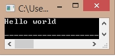

<div style="background:#ffffff; overflow:auto;width:auto;padding:.2em .6em;">
<pre style="margin: 0; line-height: 125%"><div style="width:auto;padding:.2em .6em;border:2px solid #eeeeee;box-shadow:1px 1px 1px 0px grey;background:#ffffff;;overflow:hidden"><span style="color: #226666">/*C Program to print HelloWorld*/</span></div>
<div style="width:auto;margin:10px 0px 0px 0px;padding:.2em .6em;border:2px solid #eeeeee;box-shadow:1px 1px 1px 0px grey;background:#ffffff;;overflow:scroll">
<span style="color: brown">#include&lt;stdio.h&gt;</span>

<span style="color: #333399; font-weight: bold">int</span>  <span style="color: orange; font-weight: bold">main</span>()
{
  <span style="color:  #ff1493; font-weight: bold">printf</span>(<span style="color:#32CD32">"Hello world\n"</span>);
   
  <span style="color: brown; font-weight: bold">return 0;</span>
   
}
</div>
<span style="color: #996700; font-weight: bold">Output:</span>
<div style="width:auto;padding:0px 10px 10px 10px;border:2px solid #eeeeee;background:#ffffff;box-shadow:1px 1px 1px 1px grey;overflow:hidden;background:#ffffff;text-align:center;">

</div>
</pre>
</div>